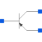

PNPSimple BJT according to Ebers-Moll |

|
Information
This information is part of the Modelica Standard Library maintained by the Modelica Association.
This model is a simple model of a bipolar PNP junction transistor according
to Ebers-Moll.
Please note:
In case of useHeatPort=true the temperature dependency of the electrical
behavior is not modelled yet. The parameters are not temperature dependent.
A typical parameter set is:
Bf Br Is Vak Tauf Taur Ccs Cje Cjc Phie Me PHic Mc Gbc Gbe Vt - - A V s s F F F V - V - mS mS V 50 0.1 1e-16 0.02 0.12e-9 5e-9 1e-12 0.4e-12 0.5e-12 0.8 0.4 0.8 0.333 1e-15 1e-15 0.02585
- References:
- Vlach, J.; Singal, K.: Computer methods for circuit analysis and design. Van Nostrand Reinhold, New York 1983 on page 317 ff.
Parameters (20)
| useHeatPort |
Value: false Type: Boolean Description: =true, if heatPort is enabled |
|---|---|
| T |
Value: 293.15 Type: Temperature (K) Description: Fixed device temperature if useHeatPort = false |
| Bf |
Value: 50 Type: Real Description: Forward beta |
| Br |
Value: 0.1 Type: Real Description: Reverse beta |
| Is |
Value: 1e-16 Type: Current (A) Description: Transport saturation current |
| Vak |
Value: 0.02 Type: InversePotential (¹/V) Description: Early voltage (inverse), 1/Volt |
| Tauf |
Value: 0.12e-9 Type: Time (s) Description: Ideal forward transit time |
| Taur |
Value: 5e-9 Type: Time (s) Description: Ideal reverse transit time |
| Ccs |
Value: 1e-12 Type: Capacitance (F) Description: Collector-substrate(ground) cap. |
| Cje |
Value: 0.4e-12 Type: Capacitance (F) Description: Base-emitter zero bias depletion cap. |
| Cjc |
Value: 0.5e-12 Type: Capacitance (F) Description: Base-coll. zero bias depletion cap. |
| Phie |
Value: 0.8 Type: Voltage (V) Description: Base-emitter diffusion voltage |
| Me |
Value: 0.4 Type: Real Description: Base-emitter gradation exponent |
| Phic |
Value: 0.8 Type: Voltage (V) Description: Base-collector diffusion voltage |
| Mc |
Value: 0.333 Type: Real Description: Base-collector gradation exponent |
| Gbc |
Value: 1e-15 Type: Conductance (S) Description: Base-collector conductance |
| Gbe |
Value: 1e-15 Type: Conductance (S) Description: Base-emitter conductance |
| Vt |
Value: 0.02585 Type: Voltage (V) Description: Voltage equivalent of temperature |
| EMin |
Value: -100 Type: Real Description: if x < EMin, the exp(x) function is linearized |
| EMax |
Value: 40 Type: Real Description: if x > EMax, the exp(x) function is linearized |
Connectors (4)
| heatPort |
Type: HeatPort_a Description: Conditional heat port |
|
|---|---|---|
| C |
Type: Pin Description: Collector |
|
| B |
Type: Pin Description: Base |
|
| E |
Type: Pin Description: Emitter |